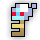
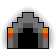

| Last updated: Exalt Version 5.13.0.0 (June 2025) |
|---|
 Music: Mortuus |
| Dust Drops | ||
|---|---|---|
| 27-35 |
0 |
0 |
The Undead Lair is a mid-level dungeon that is a source of Potions of Wisdom, the untiered Doom Bow, Wandering Souls Spell, Ring of Skeletal Specters, Spectral Sword and two pieces of the Hollow King Necromancer ST Set, and it is also another location where the Tarot Card Pack can be found to get a chance to obtain any of the Tarot Card Artifacts.
Portal to the Undead Lair has a chance to drop from Skeleton Worshipper, Skeleton of the Damned, Undead Pirate, Burning Bones, Flesh Golem and Ghost God.
Very powerful traps are camouflaged into the stone floor tiles. They will detonate when a player gets close to them.
This dungeon must be completed to earn ‘Tunnel Rat‘, ‘Hero of the Nexus’ and ‘Realm of the Mad God’ fame bonuses.
| The Realm Eye says: |
|---|

The crypt Septavius dwells in was originally built as a chapel for a now lost kingdom. When the empire began to collapse, it was used as a burial chamber for the legions of slain soldiers. Among these bodies was Septavius himself, whose undying spirit used the thousands of skeletal remains as the basis of his undead army. |
 The Undead Lair Key is available in the Nexus for 50  .
.
See the Undead Lair Guide for a complete walk-through on the dungeon and all its enemies.
The treasure room is not guaranteed to appear. It is possible that more than one treasure room can be found in a single instance of the dungeon.
The Undead Lair is part of the Standard Quest pool from The Tinkerer and has six associated quests, including a scout quest.
| Name | Description | Items Needed | Reward |
|---|---|---|---|
| Scout the Lair | Scout the Undead Lair and report back here! |  |
 |
| The Ghost God | Defeat Septavius in the Undead Lair. | |
 |
| To the Mountains! | Head to the mountains to take down Oryx’s generals! |       |
|
| Smite the Undead! | Put these ones back in their graves, would ya? |  |
|
| That’s the Spirit | All sorts of ghouls lurk in the realm, some more frightening than others! |  |
|
| Rainbow Road | Bring me some marks while you search for stat potions! | |
Although a treasure room is not guaranteed; they have a very high spawn chance, and it is common to find one or more treasure room each dungeon, making it very worthwile to explore the entirety of the dungeon. The Lair Spectral Skeleton, just like Septavius, drops a guaranteed Potion of Wisdom for at least two people, making this dungeon the most efficient for farming Wisdom.
In the Undead Lair there are always 9 rooms between the spawn room and the boss room. 11 rooms including the spawn and boss room.
The Undead Lair was one of the first two dungeons to be released to the public in Build 74 (Feb 2010), the other one being the Pirate Cave.
In Patch X.32.4.1 (Jan 2020), the treasure room and Lair Spectral Skeleton miniboss were added to the dungeon.
In Exalt Version 1.1.0.0 (Sep 2020), this dungeon received a major overhaul, reworking most (if not all) of its content. For information on the original Undead Lair, see here.
Before Exalt Version 1.1.0.0 (Sep 2020), the sprite originally looked like this:

Before Exalt Version 5.11.0.0 (May 2025), dungeon completion gave 17-40  with 60% chance.
with 60% chance.
Before Exalt Version 5.12.0.0 (June 2025), dungeon completion gave 24-32  .
.
Several skulls that can be found throughout the dungeon reference various skull items and enemies, including:
A statue of the Ghost of Skuld can be found, referencing her connection to Septavius the Ghost God in the game’s lore.
Several tiles with faces can be found throughout the dungeon, including an angry face, a skull, Oryx’s face, and the face of the Creeper mob from Minecraft.
A room full of arrows, crossbows, bows, and a few targets can be found in the dungeon. This room type, combined with stray arrows that can be found lodged into the floor throughout the dungeon, reference Septavius’ lore as a proficient marksman.
Notably, each of the bow decorations references or resembles an actual bow item in-game. The first three bows reference the Doom Bow, Deathless Crossbow, and Thousand Shot respectively, while the brown bow could reference any of the brown tiered bows before their resprites in Exalt Version 2.3.0.0 (Mar 2022), including the Shortbow, the Fire Bow, and the Double Bow.
There is a very rare chance for a monument resembling the logo for Adobe Flash Player to spawn. This game used to run on Flash before it was ported to Unity.


{kind=link}